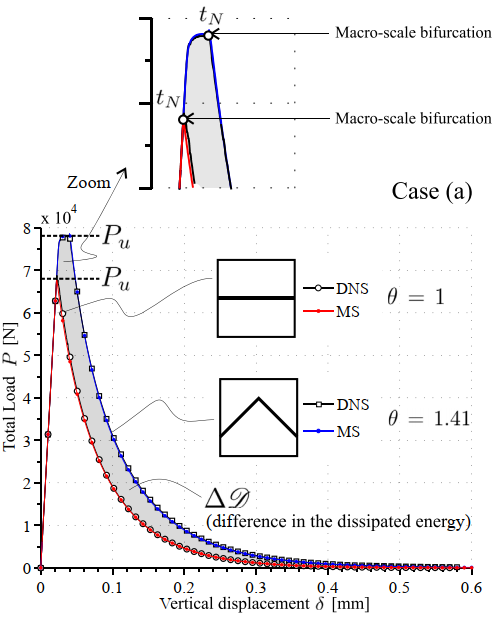

Here I'm going to compile a list of my favorite graphs and plots.
BIS Bulletins
As of now, 2020, this are my favorite asthetic. The shaded background, no border, consistent line thickness and colors.


Old preferences
Eckardt 2011
This is one seems to be standard matplotlib plot. It is from a paper (Unger ad Eckardt 2011)

Toro 2016
I think this one was made with TiKz library. I'm not sure about the dotted grid line, but a like the aesthetics of the markers and the shaded area.
Callister 2007
This books has some really beautiful aesthetic. The choice of color pallet is excellent. The plots have three different styles.
This first one seems to be used for general numeric data. Solid gridline in a light grey is nice but sometimes it feels cluttered. The inward ticks are also nice but sometimes they can cover the data, that's why matplotlib default changed for outward ticks.

Here is an example on how it sometimes can feel cluttered. He sometimes avoid grid lines when they are not needed. Gridlines are useful when we want compare the value of different curves, such as in this case.

When there is no need to compare the value of different curves, he avoids the grid lines.
He also uses simple vertical and horizontal lines for qualitative plots, which I think looks very pleasant to the eye.
There is also a plot without ticks and gridlines, this one seems to be interested in qualitative data.